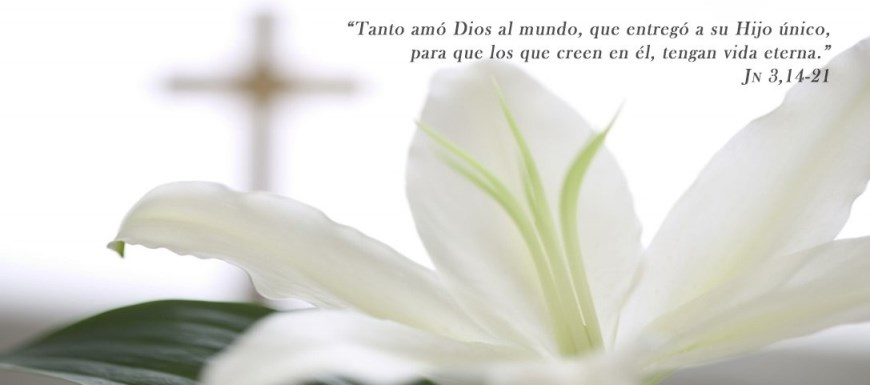
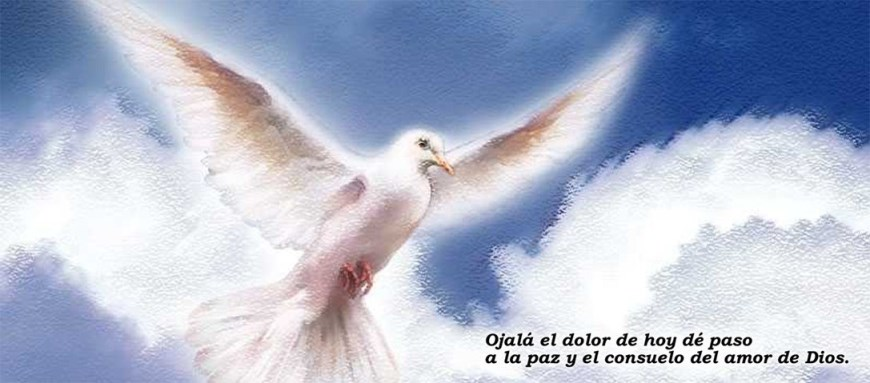

Nosotros
El objetivo general de la Fundación es contribuir con el tratamiento integral de los niños con cáncer y leucemia del país (Plan AUGE y GES), ayudando a su desarrollo integral, mejorando su calidad de vida y fortaleciendo su integración social y familiar.
En el año 1992 se creó la Fundación Oncológica Las Condes, atendiendo a niños y adultos con cáncer. En el año 2000 se modifican sus estatutos según el decreto N° 994 publicado en el Diario Oficial N° 36817, para atender solamente a niños con cáncer.
Coronas


Tamaño de tarjetas: "sobre americano".
Nuestras Coronas de Caridad son enviadas por Correos de Chile, certificadas, previo depósito o transferencia en la cuenta corriente del Banco BCI, Nº 85999997 a nombre de Fundación Niño y Cáncer, Rut.: 72.169.900-5, por un valor mínimo de $8.000.
Si usted desea enviarla con entrega 48 horas hay un recargo de $2.200 en R.M. y $3.200 para provincias.
Si realiza una trasferencia, por favor indicar en el comentario Corona de Caridad.
El reporte de ésta o la copia del depósito y los datos para cursarla, se reciben vía e-mail a:
secretaria@ninoycancer.cl
Los datos son:
Nombre de la persona fallecida.
Nombre de la persona que recibe la corona.
Dirección completa con comuna, especificando villa, pasaje, condominio, etc., de quien recibe.
Nombre de la persona que envía.
Dirección de quien envía (remitente)
También se pueden retirar en nuestra oficina ubicada en Tupungato Nº 10070 comuna de Vitacura de lunes a jueves de 9:30 a 17:30 horas y los viernes de 9:30 a 14:30 horario continuado.

FORMAS DE COLABORAR
Aportando dinero en forma automática. Tenemos convenio de débito interbancario, donde el socio firma un mandato en el que se compromete a realizar donación mensual que se descuenta a través de su cuenta corriente. Convenio con Banco de Chile, BCI, Santander Santiago, Itau, Banco del Desarrollo y Scotiabank. Convenio con Transbank para realizar descuento desde tarjetas de crédito: Visa, Master Card y Magna. (Es necesario firmar un mandato).
Depositando en la cuenta corriente:
Nº 85999997 del Banco BCI.
RUT de la Fundación: 72.169.900-5
Utilizando el "Plan Niño y Cáncer" para sus llamadas internacionales, estará ayudando y al mismo tiempo disfrutando de excelentes tarifas para sus llamadas de larga distancia.
¿Tienes un teléfono celular inútil, viejo o en desuso? Entrega tu celular viejo en nuestra oficina ubicada en Tupungato 10070, Vitacura.
En las alcancías de los Pronto Copec, Punto Copec, Librería Nacional, Aeropuerto de Santiago, Duty Free, Farmacias Carmen y comercio en general.

Coopera enviando coronas de caridad de la Fundación. Solicítalas llamando al 22170821 ó al 22170820 (Santiago).
Nuestra institución está facultada para emitir certificados de donaciones constituyendo para el donante un gasto aceptado, deducible de sus impuestos de acuerdo a lo expresado por el D.L. 3.063 de 1979 y la resolución exenta N° 3.239 de fecha 3 de mayo de 1993 de la Dirección Regional Metropolitana Santiago Oriente.

Realiza ahora tu donacion en linea a traves del sistema Web Pay Plus de Transbank aportando con tu tarjeta de credito Visa, Master Card y Magna. o Debito (Redcompra).
Ingresa los datos para donar en linea